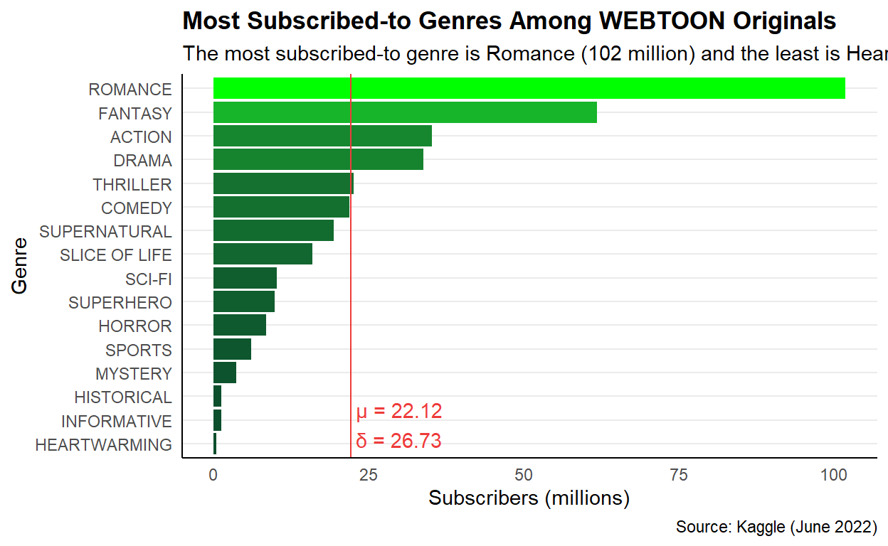

What Makes a WEBTOON Original Successful?
Visual storytelling has been around for agesever since humans smeared berry juice on cave walls with sticks.
In the modern age, WEBTOON provides a platform for anyone anywhere to upload their own visual stories for readers around the world to read for free.
WEBTOON is a veritable treasure trove of stories, perfect for a bad day pick-me-up or to inspire you to take charge as the main character of your own story. And though each is valuable in its own way, some stories still do better than others. Why?
Cut-and-dry figures are not necessarily the sole indicator of a good WEBTOON, but data analysis can identify patterns in Originals that statistically perform well among readers.
The most blatant common denominator that may reveal patterns is a series genre. Do certain genres perform better than others? Which genres are more popular among readers?
To measure how genre and overall success of a series are related, we compare the independent variable of genre with the dependent variables of the number of subscribers (in millions) and average series rating (rated from 0-10 by readers) within a sample set of 774 WEBTOON Originals.
Originals are WEBTOON-sponsored stories. Original series are provided compensation, editors, and marketing support, among other benefits.
WEBTOON compiles their own list of Top (most popular) Originals, which almost certainly considers many more factors than the two analyzed in this project.
The following data is pulled from WEBTOONs list of most popular Originals across all 16 genres, as of June 30th, 2022, are:
Note that half of these series are tagged under the Romance genre, with two of the series not directly tagged as Romance still containing central romance themes (The Unmarried Empress and Suitor Armor).
This trend, that Romance Originals are among the most successful Originals, will later be corroborated through analysis.
To conclude this project, we generate a list of 10 Originals that perform well among both metrics of subscribers and series ratings. We then compare this list to WEBTOONs official rankings.
Figure 1 displays which genres contain more Originals.
Note that some genres contain notably more Originals than others (Fantasy and Romance) and that the genre distribution does not completely parallel the distribution of average ratings (Figure 2) nor subscribers (Figure 3) across genres.
From this observation, we can conclude that genre does indeed have some effect on a series success.
We can further measure a series success with series ratings.
Series ratings are optional and entirely reader-contributed. Some factors readers may consider when voting on series ratings are:
These factors are shown at play in Figure 2, below.
Note that the y-axis scale of the graph starts at 8.8 to emphasize the rating differences. The standard deviation () is relatively low, so most of the series ratings are quite close to the mean rating () for all genres. Adding a jump to the scale makes it easier to see the minute difference in ratings.
Continuing the analysis, success can also be measured by the number of subscribers (Figure 3).

Romance wins by a landslide! How very romantic of you, WEBTOON readers. Fantasy comes second for number of subscribers, with Action and Drama at a close third and fourth.
Heartwarming ranks last in subscriber-based popularity. Despite receiving the highest ratings, this conclusion is reasonable, seeing as there are only 2 Originals in the Heartwarming genre. (WEBTOON authors, do you see this unfulfilled market niche? )
To determine if subscribers (largely representing popularity) and ratings (largely representing quality) are related, we compare subscribers and ratings.
The following figures are interactive; hover over any point to see the series details.
The overall correlation between subscribers and ratings is high; series with higher subscriber counts also tend to have higher ratings, and vice versa. This proves that popularity (measured by subscribers) and quality (measured by ratings) are related.
The observations regarding the subscribers-rating relationship across all genres still holds for most individual genres. SPORTS and INFORMATIONAL, however, both appear to have a weak correlation between subscribers and ratings.
Through this analysis, we conclude that popularity, quality, and genre all provide insight into the success of a WEBTOON Original.
Note: Toggle with the Subscribers and Rating column filters to see how the chart changes when popularity or quality are the primary factor for success.
The predicted Top 10 chart From the predicted Top 10 chart,
Viewer ratings and subscriber counts prove that Romance and Fantasy Originals are the most popular.